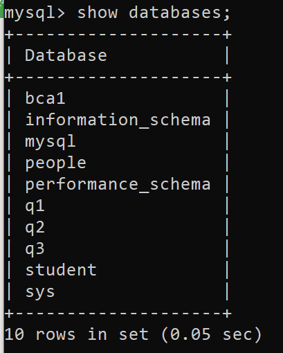

MySQL Database
A database is used to store the collection of records in an organized form. It allows us to hold the data into tables, rows, columns, and indexes to find the relevant information frequently. We can access and manage the records through the database very easily.
To create a database , use this syntax :
CREATE DATABASE [IF NOT EXISTS] database_name
[CHARACTER SET charset_name]
[COLLATE collation_name];
To view all database present in the system , syntax is
show databases;
To use or access database , use the command :
use database_name;
To delete database
We can drop/delete/remove a MySQL database quickly with the MySQL DROP DATABASE command. It will delete the database along with all the tables, indexes, and constraints permanently. Therefore, we should have to be very careful while removing the database in MySQL because we will lose all the data available in the database. If the database is not available in the MySQL server, the DROP DATABASE statement throws an error.
drop database database_name;